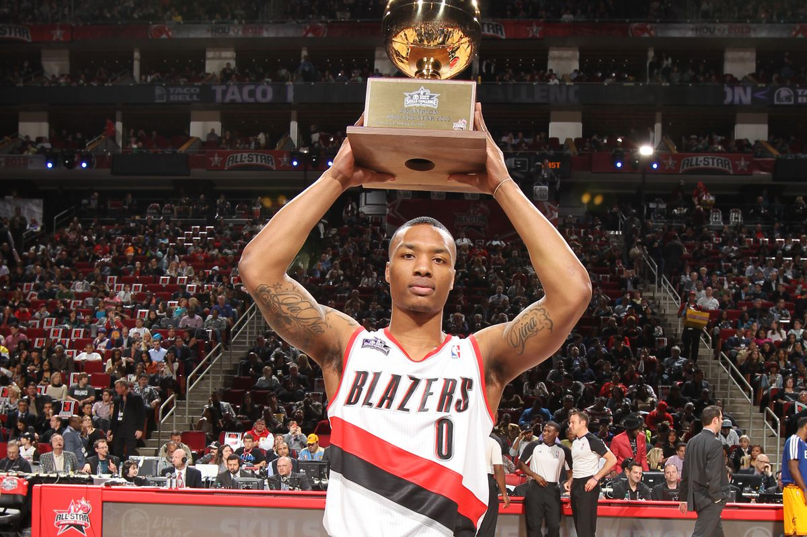

NBA
6× NBA All-Star (2014, 2015, 2018, 2019, 2020, 2021)
All-NBA First Team (2018)
4× All-NBA Second Team (2016, 2019, 2020, 2021)
All-NBA Third Team (2014)
NBA Bubble Most Valuable Player (2020)
NBA Rookie of the Year (2013)
NBA All-Rookie First Team (2013)
J. Walter Kennedy Citizenship Award (2019)
NBA Teammate of the Year (2021)
NBA Rising Star (2012, 2013)
2× NBA Skills Challenge champion (2013, 2014)
First NBA player ever to participate in 5 events in All Star Weekend (2014: Rising Stars Challenge: Dunk Contest, 3-point Contest, Skills Challenge winner, All Star Game)
NBA 75th Anniversary Team (2021)